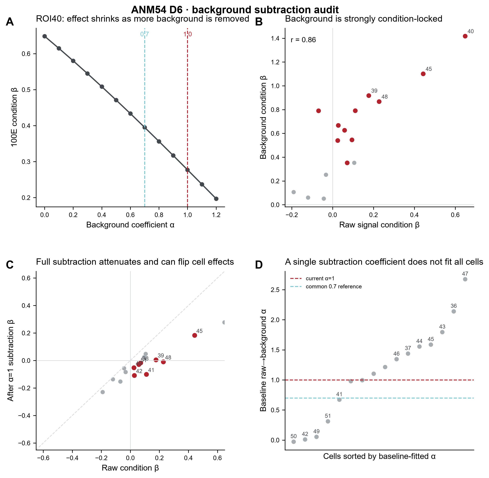
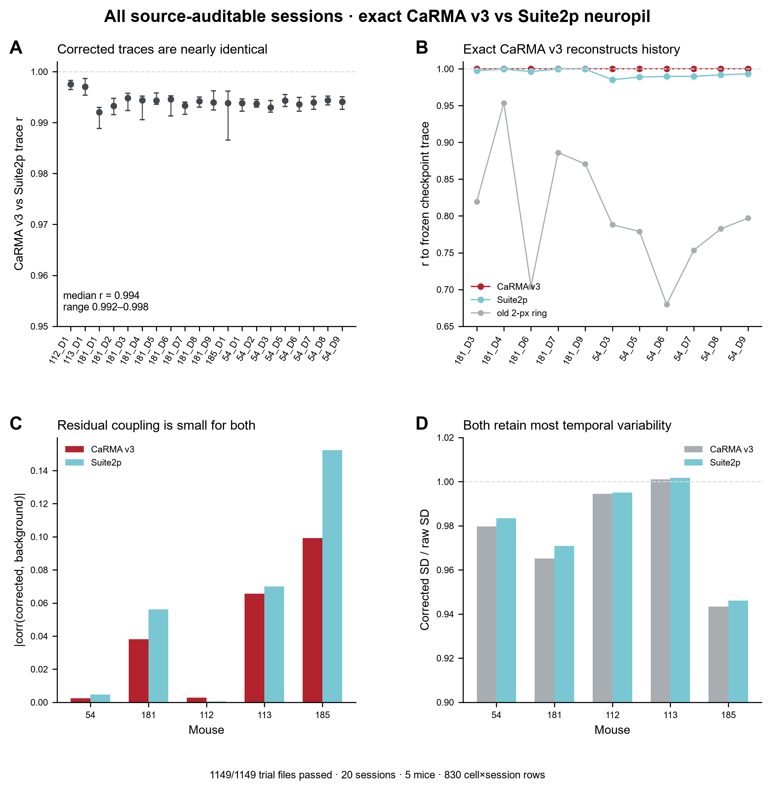

Full local-background subtraction is not safe as the sole biological authority
The historical extractor used a local background mask and exported sub = raw ? 1.0?background. The audit below asks whether that operation removes only contamination or also condition-locked biology.

What the extractor actually did

The local background is not an empty black region. The historical geometry uses a 20-px disk around each centroid, excludes detected somata after a small dilation, but still samples a large field of neuropil and local processes. In the examples above the background mask contains roughly ten to twenty times more pixels than the soma ROI.
| Quantity | D6 result |
|---|---|
| Historical correction | raw ? 1.0?background |
| ROI40 raw ? | 0.649 |
| ROI40 background ? | 1.417 |
| ROI40 ?=1 ? | 0.277 |
| ROI40 background-covariate ? | 0.095, P=0.276 |
| Baseline-fitted ? range | ?0.03 to 2.67 |
| Baseline-fitted ? median | 1.16 |
| Raw/background ? correlation | r=0.86 |
Exact method validation across all source-auditable sessions
ExtractVOlResp_SubRing_v3 with a 20-pixel local disk, 2-pixel cell exclusion and coefficient 1.0 — not an immediate 2-pixel ring. The corrected rerun passed 1149/1149 trial files across 20 sessions and 5 mice.
Open the full all-animal extraction audit →
Frame-level registration QC
A mean image can look acceptable while individual frames still move. The audit therefore uses the same raw and registered frames. The bottom panels compare current-frame edges (red) against a reference image (cyan); white overlap means better alignment.

Inline animated fallback. This is rendered directly by the page so the frame sequence remains visible even if the native video player is blocked.
D6 ? S3 ? Trial 1. All 192 frames are inspected. High-pass frame-to-reference similarity rises from mean r=0.042 before registration to r=0.171 after registration (~4.1?). The registered sequence is clearly more stable, although the edge overlay still shows residual non-rigid mismatch and intensity/z variation that mean-image QC alone would miss.
Frame-level metrics CSV ? Open still frame


The raw movie contains a small number of large displacement outliers; after registration the frame-to-template metric becomes much more stable. The image movie remains the primary QA because correlation alone cannot reveal non-rigid or z-axis mismatch.
What this movie can and cannot establish
It can establish: whether registration reduces frame-to-frame displacement, whether ROI boundaries remain over the same structures, and whether large transient shifts remain.
It cannot by itself establish: whether a condition-locked background response is neuropil biology, out-of-plane fluorescence, hemodynamic/global intensity change, or residual motion. That requires event-triggered pixel maps and signal-source comparisons on the same trials.
Current analysis policy
The next authority step is event-level biological sensitivity: continuous traces, PSTHs, trial heatmaps, per-cell effects and same-cell cross-day responses under all three signal definitions.
16-cell audit CSV ? ROI40 ? sweep ? Daily same-cell identity matrix ? Back to 2P pipeline